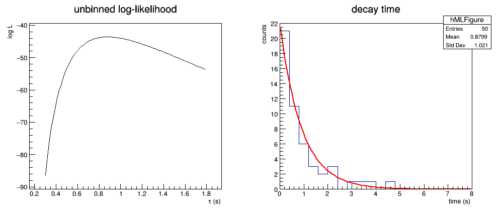

最大似然法与最小二乘法
以指数衰变时间为例，比较未分箱最大似然、分箱 Poisson 似然和最小二乘拟合。
未分箱最大似然
若测得 \(N\) 个相互独立的衰变时间 \(t_i\)，并假设
\[
f(t\mid\tau)=\frac{1}{\tau}e^{-t/\tau},\qquad t\ge 0,
\]
则对数似然为
\[
\ln L(\tau)=-N\ln\tau-\frac{1}{\tau}\sum_i t_i.
\]
令其导数为零可得
\[
\hat\tau=\frac{1}{N}\sum_i t_i,qquad
\sigma_{\hat\tau}\simeq\frac{\hat\tau}{\sqrt{N}}.
\]
这里的似然直接使用每个事件的时间，没有先制作直方图。
分箱 Poisson 似然
实验数据经常先填入直方图。每个 bin 的计数仍是 Poisson 变量，因此低计数时可使用 ROOT 的 L 选项进行分箱 Poisson 似然拟合。
TRandom3 rng(12345);
TH1D h("h", "decay time;time (s);counts", 20, 0.0, 8.0);
double timeSum = 0.0;
int numberOfEvents = 50;
for (int i = 0; i < numberOfEvents; ++i) {
double time = rng.Exp(1.0); // 产生平均寿命为 1 s 的衰变时间
timeSum += time;
h.Fill(time);
}
double unbinnedTau = timeSum / numberOfEvents;
double unbinnedError = unbinnedTau / sqrt(numberOfEvents);
TF1 model("model", "[0]*exp(-x/[1])", 0.0, 8.0);
model.SetParameters(h.GetMaximum(), 1.0);
model.SetParLimits(1, 0.01, 10.0); // 将寿命参数限制在正值范围
h.Fit(&model, "LQ"); // L：使用每个 bin 的 Poisson 似然
TGraph logLikelihood;
logLikelihood.SetTitle("unbinned log-likelihood;#tau (s);log L");
for (int i = 0; i < 150; ++i) {
double testTau = 0.3 + 0.01 * i;
double logL = -numberOfEvents * log(testTau) - timeSum / testTau;
logLikelihood.SetPoint(i, testTau, logL);
}
std::cout << "unbinned: tau = " << unbinnedTau
<< " +/- " << unbinnedError << " s\n";
std::cout << "binned: tau = " << model.GetParameter(1)
<< " +/- " << model.GetParError(1) << " s\n";
TCanvas c("c", "likelihood fits", 1000, 450);
c.Divide(2, 1);
c.cd(1); logLikelihood.Draw("AL");
c.cd(2); h.Draw();import math
import ROOT
rng = ROOT.TRandom3(12345)
h = ROOT.TH1D("h", "decay time;time (s);counts", 20, 0.0, 8.0)
time_sum = 0.0
number_of_events = 50
for i in range(number_of_events):
time = rng.Exp(1.0) # 产生平均寿命为 1 s 的衰变时间
time_sum += time
h.Fill(time)
unbinned_tau = time_sum / number_of_events
unbinned_error = unbinned_tau / math.sqrt(number_of_events)
model = ROOT.TF1("model", "[0]*exp(-x/[1])", 0.0, 8.0)
model.SetParameters(h.GetMaximum(), 1.0)
model.SetParLimits(1, 0.01, 10.0) # 将寿命参数限制在正值范围
h.Fit(model, "LQ") # L：使用每个 bin 的 Poisson 似然
log_likelihood = ROOT.TGraph()
log_likelihood.SetTitle("unbinned log-likelihood;#tau (s);log L")
for i in range(150):
test_tau = 0.3 + 0.01 * i
log_l = -number_of_events * math.log(test_tau) - time_sum / test_tau
log_likelihood.SetPoint(i, test_tau, log_l)
print("unbinned: tau =", unbinned_tau, "+/-", unbinned_error, "s")
print("binned: tau =", model.GetParameter(1),
"+/-", model.GetParError(1), "s")
canvas = ROOT.TCanvas("canvas", "likelihood fits", 1000, 450)
canvas.Divide(2, 1)
canvas.cd(1); log_likelihood.Draw("AL")
canvas.cd(2); h.Draw()
与最小二乘法的关系
去掉拟合选项中的 L，TH1::Fit 默认使用最小二乘法。计数较高时，Poisson 分布接近 Gaussian 分布，两种方法通常给出相近结果；计数较低或存在空 bin 时，Poisson 似然更符合计数数据的统计模型。
分箱会丢失 bin 内的事件位置。需要充分利用每个事件的测量值时，应使用未分箱似然；数据本身只有 bin 计数时，则使用分箱方法。